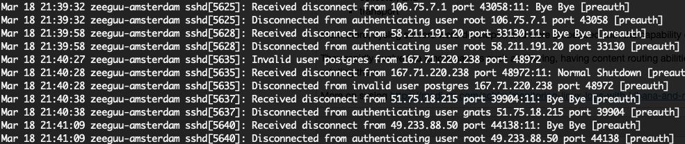
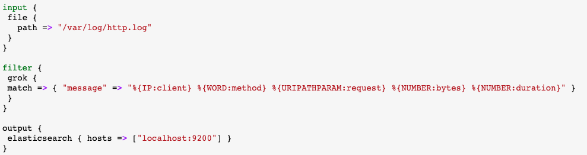

class: center, middle <img src="https://www.saa-authors.eu/picture/739/ftw_768/saa-mtcwmza4nzq5mq.jpg" width=40%/> # DevOps, Software Evolution and Software Maintenance Mircea Lungu, Associate Professor,<br> [IT University of Copenhagen, Denmark](https://www.itu.dk)<br> `mlun@itu.dk` --- class: center, middle # Feedback --- ## The state of your projects? --- ### Release Activity <object width="100%" data="http://138.197.185.85/release_activity_weekly.svg"></object> --- ### Weekly Commit Activity <object width="100%" data="http://138.197.185.85/commit_activity_weekly.svg"></object> --- ### Daily Commit Activity <object width="100%" data="http://138.197.185.85/commit_activity_daily.svg"></object> --- ### Latest processed events <object width="100%" data="http://104.248.134.203/chart.svg"></object> --- ### Error plot <object width="100%" data="http://104.248.134.203/error_chart.svg"></object> --- # Prep Questions ### Question #1 for You: Which of your endpoints is the slowest? How slow is it? ### Question #2 for You: Where is the time being spent in this endpoint? How did you find out? --- # Limitations of Monitoring Tracks high-level metrics the system (error rate of endpoint: 2%) Does not explain *WHY* there was a problem. For the WHY: - **Logging** (*main topic of today*) - **Profiling** = dynamic program analysis for errors & performance problems (*example on next slide*) - **Tracing** = observing requests as they propagate through distributed systems (*not today*) Read More: [Why Grafana is Good at Metrics and Not Logs](https://grafana.com/blog/2016/01/05/logs-and-metrics-and-graphs-oh-my/) --- # Case Study: FMD FMD = Flask Monitoring Dashboard * Research Project ([paper](https://github.com/flask-dashboard/Vissoft-17-Paper/blob/master/FlaskDashboard-Preprint.pdf)) * MIT License (https://github.com/flask-dashboard/) * Laser focused * Python + Flask * Small projects => stand-alone API / App * Simple to deploy & use * Leverages version-control information --- ## Profiling with FMD A profilter is a tool that helps understand code from a timing point of view. Essentially, answers the question: "Where is my code spending the time?" FMD * Selectively can deploy a ***profiler*** with fine-granularity * Profiling introduces significant overhead - Measuring the overhead is tricky Reading for next time: [A Performance Problem](https://mircealungu.com/notes/A-Performance-Problem.html) --- ## FMD: Meta-Observations Can be easily installed **because its laser-focused** Started as a bachelor thesis continued as master's thesis => Lessons - Stick to your project - It can take years till something becomes successful Multiple possible theses in the context of FMD 1. Automatically detecting performance regressions 2. Advanced statistical analysis of performance distributions --- class: center, middle # Logging --- # Logging #### ... the practice of collecting and analyzing log data generated by applications, infrastructure, and other components of a system Logs are - the stream of - aggregated - time-ordered events - collected from all running processes and backing services --- ## Purpose * Understanding (how is your system being used?) * Diagnosis (of an actual problem) - What happened yesterday? - Why is/was the service slow/down? - Were we under attack? * Audit trails - Sometimes logs are legally required - Ultimate example: bitcoin - a big log of all transactions --- ## Logfiles In server-based environments they are commonly written to a file on disk (a “logfile”) e.g. cat /var/log/auth.log  * A reminder of the importance of security... --- ### Obs: Different programs have different log formats... ``` $ head -n 1 /var/log/auth.log Mar 16 07:15:55 zeeguu-amsterdam sshd[29424]: Invalid user vultr from 144.217.243.216 port 56450 $ head -n 1 /var/log/apache2/error.log [Wed Mar 18 20:39:02.962354 2020] [wsgi:error] [pid 18:tid 140056344164096] [remote 212.187.36.136:57046] Session is retrived from cookies $ head -n 1 /var/log/nginx/access.log 66.249.65.62 - - [06/Nov/2014:19:12:14 +0600] "GET /?q=%E0%A6%A6%E0%A7%8B%E0%A7%9F%E0%A6%BE HTTP/1.1" 200 4356 "-" "Mozilla/5.0 (compatible; Googlebot/2.1;)" $ head -n 1 /var/log/system.log Mar 18 21:25:16 Harlequin logd[85]: #DECODE failed to resolve UUID: [pc:0x7fff75485ac7 ns:0x06 type:0x82 flags:0x8208 main:A52374C3-0F9D-3062-A636 pid:435] ``` ### ... although we could have avoided that: --- # Syslog Protocol * Developed in 80s * Aims at standardizing the way logs are **formatted** and **transmitted** in a network ([RFC 3164 (2001)](https://tools.ietf.org/html/rfc3164) [RFC 5424 (2009)](https://tools.ietf.org/html/rfc5424)) * Not only for Linux, but for any system exchanging logs Enables separation between - Sender - Collector - Transport --- # Example Syslog Entry Format <br/> <br/> <img src="images/syslog_line.png" alt="Drawing" style="width: 600px;"/> --- # Syslog Log Levels <img src="images/syslog_levels.png" alt="Drawing" style="width: 700px;"/> --- # Syslog Architectures <img src="images/syslog_architectures.png" width="100%"> (Source: [RFC 5424 (2009)](https://tools.ietf.org/html/rfc5424)) --- # Logging Principles 1. A process should not worry about storage 2. A process should log only what is necessary 3. Log at the proper level 4. Logs should be centralized --- ## 1. A process should not worry about storage Don't decide which logfile to write to. Instead, each process should **write to its unbuffered stdout stream**. Advantages * During development: dev looks at the terminal * During deployment output from process is routed where needed * Different contexts result in different logfiles (e.g. cronjob) --- ## 2. A process should log only what is necessary Q: What is necessary? A: What is your application's business. - e.g. Apache vs. Credit Suisse vs. MiniTwit <br/> Why? * You avoid redundancy (don't log the web server accesses) * You avoid overloading the reader with a deluge of irellevance * You avoid wasting disk space (N.B. logfiles can become large fast) --- ### Note: logfiles can become huge fast (*Personal story*) The [Zeeguu](https://zeeguu.org) research project - Logfile grows to multi-GB size in a few months - Fills the disk - To the point of not being able to ssh into bash - Solution: `ssh user@server rm -rf /tmp` Scenario - 10 servers - 1000 req / sec * 1KB per Event - => you'd need quite a network bandwidth... Solutions - **Log rotation** - set a threshold of time / size - after which the data in the file is truncated / stored elsewhere - Do not store logs on the same machine as your application --- ## 3. Log at the proper level * Allows the user to control the amount of logging * Better than println - intention revealing - can be turned off gradually Possible Strategy: - DEBUG = anything that happens in the program; deploy to production carefully; ideally turn on only as needed - INFO = actions that are user-driven and meaningful for your system - NOTICE = thought out for production - notable events that are not an error - WARN = events that might turn into an error - ERROR = every error situation See following example... --- ```python import sys from importlib import reload import logging reload(logging) #hack because of jupyter logging.basicConfig( format="%(asctime)-15sZ %(levelname)s [%(module)s] %(message)s", datefmt="%Y-%m-%d %H:%M:%S.%f", level=logging.DEBUG, stream=sys.stdout ) logging.debug("Got here!") logging.info("Demo started.") logging.warning("Ooops. Something went wrong!") logging.error("Logging is broken in Jupyter") logging.critical("System will shot down") ``` 2022-03-22 11:05:23.fZ DEBUG [392630104] Got here! 2022-03-22 11:05:23.fZ INFO [392630104] Demo started. 2022-03-22 11:05:23.fZ WARNING [392630104] Ooops. Something went wrong! 2022-03-22 11:05:23.fZ ERROR [392630104] Logging is broken in Jupyter 2022-03-22 11:05:23.fZ CRITICAL [392630104] System will shot down --- ## 4. Logs should be centralized Valuable to have all the information in one place - Enables correlation analysis - More scalable than conecting to various machines to search through files Also, when you are running stuff in containers if you don't collect and ship the logs, they'll disapear when you destroy the container --- # Logging Challenges / Solutions 1. Searching through a deluge of log messages can be complicated / *a powerful query engine* 3. Complex systems can generate logs in different formats / *tools for converting to a unified format* 4. Logging can result in very large data / *a scalable, distributed maybe, performant way to index them* --- # The ELK Stack One of the most popular solutions at the moment <img src="images/ELK.png" alt="Drawing" style="width: 600px;"/> Stands for: * ElasticSearch * Logstash * Kibana --- ## E: ElasticSearch Scalable Full Text Search... * Based on Apache Lucene * Distributed & Replicated * Almost real time full text search * Stores logs in dedicated log indexes * Based on JSON over HTTP Personal Story: - [MySQL 8.0 Full Text Search](https://dev.mysql.com/doc/refman/8.0/en/fulltext-search.html) vs. ElasticSearch (research project) - Guess who wins? --- ## L: Logstash Java-Based Log Parser - Converts from various log line formats to JSON - Tails log files and emits events when a new log message is added - Comes with a powerful pattern parsing plugin (Grok)  Challenges - Not easy to configure + difficult to troubleshoot - Resource hungry --- ### e.g. Parsing syslog format with Logstash input { file { path => "/Users/mircea/local/projects/zeeguu/CodeBase/ Zeeguu-Mono-Web/zeeguu_mono_web.log" } } filter { grok { match => { "message" => "%{TIMESTAMP_ISO8601:timestamp} %{DATA:level} %{DATA:process} %{GREEDYDATA:log}" } } date { match => [ "timestamp" , "dd/MMM/yyyy:HH:mm:ss Z" ] } } output { elasticsearch { hosts => "elasticsearch:9200" user => "elastic" password => "changeme" index => "zeeguu_web" } } --- ## K: Kibana Powerful visualization tool tailored for ElasticSearch - Its own query language (KQL) --- # Variations and Alternatives to ELK 1. EFLK 2. EFK 3. FRELK 4. Alternative Parsers and Shippers 5. Alternative DB and Dashboard --- ## 1. EFLK EFLK = ELK + Filebeat Filebeat = Log Shipper - Addresses resource consumption of logstash - Lightweight agents on different machines send logs to logstash - Has special plugin for *docker* -- see your exercises for an example <img src="images/FELK.png" alt="Drawing" style="width: 65%;" /> --- ## 2. EFK: Dropping the Logstash - Filebeat sends data straight to ElasticSearch - If you don't need to parse further the `@message` field - In your exercises example !!! --- ## 3. FRELK: With Redis message broker - Purpose: prevention of data loss <img src="images/FRELK.png" alt="Drawing" style="width: 600px;" /> --- ## 4. .NET logging package + EK "My group ditched LogStash last year in part because it is slow, but also because .NET had a logging package that seamlessly integrated with ElasticSearch. So we basically just logged straight into ElasticSearch" > (DevOps student from 2021) --- ## 5. Loki + Promtail + Grafana Loki = **log aggregation tool developed by Grafana labs** - Lightweight = Only indexes meta-data - No distributed architecture for Loki (vs. ES) Promtail = **agent that ships the contents of local logs** <img src="./images/loki-and-promtail.png" width="80%"/> - LogQL might be more complicated --- ## 6. Without a web interface LNAV = Log File Navigator ([lnav.org](https://lnav.org/)) - Basic search from the command line - Practically no resources - Can aggregate live multiple files - I use it for my personal research project --- # Ethical & Security Aspects * Do not log plain secrets (user or server) - Do not log user private data - You might have to "GDPR-remove" them * Be aware of who has access to the data and the data that is logged --- ## Logging for Analytics? You can use your own logging infra for analytics instead of relying on Google Analytics Note: More logs => and more privacy concerns --- ## Logging vs. Crash Reporting (e.g. Sentry) - Similarity: often written to the same logfile (in the case of web apps) - Difference: some log entires are not crashes but simply informational --- ## High-Resolution Logging - With sufficiently *high-resolution* logging you can have a practical backup of the state of the database... - *Binary logging* in the MySql context - Stream of events that modify the DB - Can be shipped across machines --- ## Good to Know - Docker - all logs can be found in `/var/lib/docker/containers/<container_id>` - When using Docker containers - log files are lost when recreating continaers --- class: center, middle # Service Level Agreements --- # Service-Level Agreement (SLA) Commitment between a service provider and a client. Particular aspects of the service are agreed upon * quality * availability * responsibilities --- # SLA Metrics Common metrics for web services - Uptime/availability (usually percentage of all time) - Mean response time (average time before answer) - Mean time to recover (time to recover after outage) - Failure frequency (number of failures/timeouts over time) --- # Comparing Two SLAs Cloud Services for Multilingual Translation - Google Translate ([link](https://cloud.google.com/translate/sla)) - Azure Translate ([link](https://azure.microsoft.com/en-us/support/legal/sla/machine-learning-service/v1_0/)) To think about: 1. How is Uptime defined? 2. How do back-off requirements influence the definition of Uptime? 3. How is Downtime defined? 4. Which is more generous in case of reward for downtime? --- ## Resources Installing ELK with Docker: https://logz.io/blog/elk-stack-on-docker/ Good patterns for Grok: https://qbox.io/blog/logstash-grok-filter-tutorial-patterns This one uses Filebeat: https://www.elastic.co/guide/en/logstash/current/advanced-pipeline.html Grok Debugger: https://grokdebug.herokuapp.com/